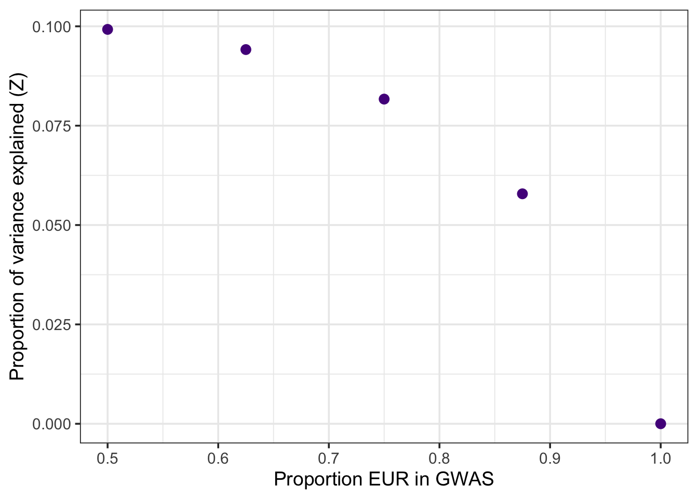
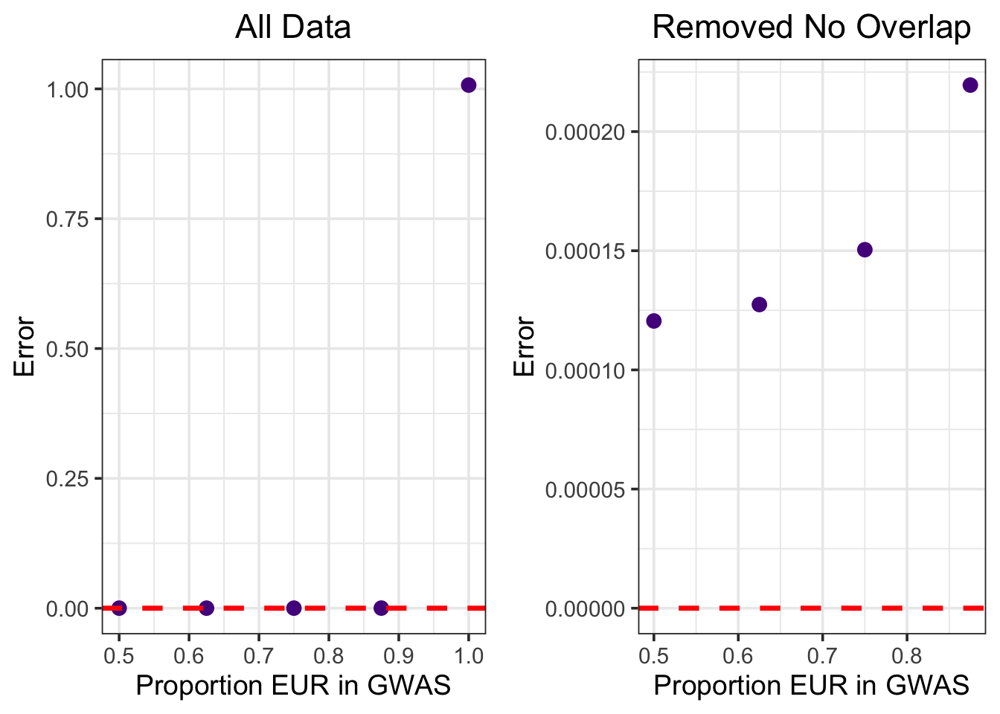

TestExample
Jennifer Blanc
2024-07-11
Last updated: 2024-07-29
Checks: 6 1
Knit directory:
polygenic_selection_stratification/analysis/
This reproducible R Markdown analysis was created with workflowr (version 1.7.1). The Checks tab describes the reproducibility checks that were applied when the results were created. The Past versions tab lists the development history.
Great! Since the R Markdown file has been committed to the Git repository, you know the exact version of the code that produced these results.
Great job! The global environment was empty. Objects defined in the global environment can affect the analysis in your R Markdown file in unknown ways. For reproduciblity it’s best to always run the code in an empty environment.
The command set.seed(20240711) was run prior to running
the code in the R Markdown file. Setting a seed ensures that any results
that rely on randomness, e.g. subsampling or permutations, are
reproducible.
Great job! Recording the operating system, R version, and package versions is critical for reproducibility.
- unnamed-chunk-2
To ensure reproducibility of the results, delete the cache directory
TestExample_cache and re-run the analysis. To have
workflowr automatically delete the cache directory prior to building the
file, set delete_cache = TRUE when running
wflow_build() or wflow_publish().
Great job! Using relative paths to the files within your workflowr project makes it easier to run your code on other machines.
Great! You are using Git for version control. Tracking code development and connecting the code version to the results is critical for reproducibility.
The results in this page were generated with repository version d959593. See the Past versions tab to see a history of the changes made to the R Markdown and HTML files.
Note that you need to be careful to ensure that all relevant files for
the analysis have been committed to Git prior to generating the results
(you can use wflow_publish or
wflow_git_commit). workflowr only checks the R Markdown
file, but you know if there are other scripts or data files that it
depends on. Below is the status of the Git repository when the results
were generated:
Ignored files:
Ignored: .DS_Store
Ignored: .RData
Ignored: .Rhistory
Ignored: .Rproj.user/
Ignored: analysis/TestExample_cache/
Ignored: code/.DS_Store
Ignored: data/HGDP1KG/
Ignored: data/SDS/raw/
Ignored: data/adnaSel/raw/
Ignored: data/liftover/
Untracked files:
Untracked: snakefile_HGDP1KG
Unstaged changes:
Modified: _workflowr.yml
Modified: analysis/HGDP1KG.Rmd
Modified: analysis/adnaSel.Rmd
Note that any generated files, e.g. HTML, png, CSS, etc., are not included in this status report because it is ok for generated content to have uncommitted changes.
These are the previous versions of the repository in which changes were
made to the R Markdown (analysis/TestExample.Rmd) and HTML
(docs/TestExample.html) files. If you’ve configured a
remote Git repository (see ?wflow_git_remote), click on the
hyperlinks in the table below to view the files as they were in that
past version.
| File | Version | Author | Date | Message |
|---|---|---|---|---|
| Rmd | d959593 | Jennifer Blanc | 2024-07-29 | wflow_publish(c("analysis/index.Rmd", "analysis/TestExample.Rmd")) |
| Rmd | db54b9a | Jennifer Blanc | 2024-07-20 | t |
| Rmd | d5e7b21 | Jennifer Blanc | 2024-07-19 | t |
| Rmd | 3f4691f | Jennifer Blanc | 2024-07-19 | t |
| Rmd | f48477f | Jennifer Blanc | 2024-07-15 | t |
| Rmd | 8006514 | Jennifer Blanc | 2024-07-11 | hope this works |
Construct Test and GWAS panels
Explore PCA of Whole Biobank
Plot PC1 vs PC2 colored by self-identified ethnic background
# Load data and combine
dfPCA <- fread("../endpoints/ukbb/whole_biobank.eigenvec.gz")
dfEB <- fread("../endpoints/ukbb/EthnicBackground_21000.txt")
df <- inner_join(dfPCA, dfEB)Joining, by = c("#FID", "IID")# Use continental labels
df <- df %>% mutate(continental = case_when(EthnicBackground_21000 %in% c(4, 4001, 4002, 4003) ~ "Africa", EthnicBackground_21000 %in% c(1, 1001, 1002, 1003) ~ "Europe", EthnicBackground_21000 %in% c(2, 2001, 2002, 2003, 2004) ~ "Mixed", EthnicBackground_21000 %in% c(3, 3001, 3002, 3003, 3004) ~ "Asia"))# Make PCA plot color based on self identified Ethnic background
ggplot(data = df, aes(x = PC1, y = PC2, color = continental)) + geom_point() + theme_classic(base_size = 14) + scale_color_manual(values = c("darkred", "navy", "goldenrod4", "gray50"), na.value = "gray70") Sample individuals each on opposite ends of PC1
Sample individuals each on opposite ends of PC1
# Sample from each end of PC1
dfEur <- df %>% arrange(desc(PC1)) %>% slice_head(n = 11000)
dfAfr <- df %>% arrange(PC1) %>% slice_head(n = 6000)
# Plot data
tmp <- rbind(dfEur, dfAfr)
ggplot(data = tmp, aes(x = PC1, y = PC2, color = continental)) + geom_point() + theme_classic(base_size = 14) + scale_color_manual(values = c("darkred", "navy", "goldenrod4", "gray50"), na.value = "gray70")The 6,000 individuals with the smallest PC1 values mostly self-identify as “African”. The 11,000 with the largest PC1 values mostly self-identify as European.
Sample Panels based on PC 1
Make mixed panels with different amounts of overlap:
- Test panel: 1,000 Afr, 1,000 Eur
- GWAS panels:
- 10,000 Eur
- 8,750 Eur, 1,250 Afr
- 7,500 Eur, 2,500 Afr
- 6,250 Eur, 3,750 Afr
- 5,000 Eur, 5,000 Afr
- 10,000 Eur
Results
\(\hat{F}_{Gr}\) for indviduals in the GWAS panel
# Complete Overlap
FGr_complete <- fread("../endpoints/TestExample/final_FGr/complete_chr-all_test-all_Afr-Eur.txt.gz")
p1 <- ggplot(data = FGr_complete, aes(x = PC1, y = FGr, color = POP)) + geom_point() + theme_classic(base_size = 14) + scale_color_manual(values = c("darkred", "navy")) + ggtitle("Complete Overlap") + theme(plot.title = element_text(hjust = 0.5))
# No Overlap
FGr_none <- fread("../endpoints/TestExample/final_FGr/none_chr-all_test-all_Afr-Eur.txt.gz")
p2 <- ggplot(data = FGr_none, aes(x = PC1, y = FGr, color = POP)) + geom_point() + theme_classic(base_size = 14) + scale_color_manual(values = c("darkred", "navy")) + ggtitle("No Overlap") + theme(plot.title = element_text(hjust = 0.5))
# Print plots
p <- ggarrange(p1, p2, nrow =1, common.legend = TRUE)
pOverlap statistics
Load data and process
dfOverlap <- fread("../endpoints/TestExample/OverlapStats.txt")
dfOverlap <- dfOverlap %>% mutate(prop_eur = case_when(gwas == "complete" ~ 0.5,
gwas == "none" ~ 1,
gwas == "half" ~ 0.75,
gwas == "quarter" ~ 0.875,
gwas == "threequarter" ~ 0.625)) Overlap vs proportion of variance explained
ggplot(dfOverlap, aes(x = prop_eur, y = Z)) + geom_point(size = 3, color = "purple4") + theme_bw(base_size = 14) + xlab("Proportion EUR in GWAS") + ylab("Proportion of variance explained (Z)")  As the proportion of overlap between panels decreases, the proportion of variance explained by \(\hat{F}_{Gr}\) also decreases.
Overlap vs error
p1 <- ggplot(dfOverlap, aes(x = prop_eur, y = error)) + geom_point(size = 3, color = "purple4") + theme_bw(base_size = 14) + xlab("Proportion EUR in GWAS") + ylab("Error") + geom_hline(yintercept = 0, color = "red", linetype = 2, linewidth = 1.2) + ggtitle("All Data") + theme(plot.title = element_text(hjust = 0.5))
# Remove no overlap
p2 <- dfOverlap %>% filter(prop_eur %in% c(0.5,0.750, 0.875, 0.625)) %>% ggplot(aes(x = prop_eur, y = error)) + geom_point(size = 3, color = "purple4") + theme_bw(base_size = 14) + xlab("Proportion EUR in GWAS") + ylab("Error") + geom_hline(yintercept = 0, color = "red", linetype = 2, linewidth = 1.2) + ggtitle("Removed No Overlap") + theme(plot.title = element_text(hjust = 0.5))
# Print plots
p <- ggarrange(p1, p2, nrow = 1)
p First problem is that the error in the no overlap situation is greater than one (1.0073). I’m not sure how concerned to be about this. The other thing to notice is that while Z decreases gradually with decreased overlap, error goes from 0 to near 1 abruptly with a small amount of overlap. It does appear that error decreases with increased overlap.
Proportion variance explained vs error
# All data
p1 <- ggplot(dfOverlap, aes(x = Z, y = error)) + geom_point(size = 3, color = "purple4") + theme_bw(base_size = 12) + ylab("Error") + xlab("Proportion of variance explained (Z)") + geom_hline(yintercept = 0, color = "red", linetype = 2, linewidth = 1.2) + ggtitle("All Data") + theme(plot.title = element_text(hjust = 0.5))
# Remove no overlap
p2 <- dfOverlap %>% filter(prop_eur %in% c(0.5,0.750, 0.875, 0.625)) %>% ggplot(aes(x = Z, y = error)) + geom_point(size = 3, color = "purple4") + theme_bw(base_size = 12) + ylab("Error") + xlab("Proportion of variance explained (Z)") + geom_hline(yintercept = 0, color = "red", linetype = 2, linewidth = 1.2) + ggtitle("Removed No Overlap") + theme(plot.title = element_text(hjust = 0.5))
# Print plots
p <- ggarrange(p1, p2, nrow = 1)
pNot sure there is any new insight from this plot, as Z is related to the overlap.
Overlap vs D
dfOverlap$d_lc <- dfOverlap$D - (2*sqrt(dfOverlap$varD))
dfOverlap$d_uc <- dfOverlap$D + (2 *sqrt(dfOverlap$varD))
ggplot(dfOverlap, aes(x = prop_eur, y = D)) + geom_point(size = 2) + geom_hline(yintercept = 999, color = "red", linetype = 2) + geom_errorbar(aes(ymin = d_lc, ymax = d_uc)) + theme_bw(base_size = 12) + xlab("Proportion EUR in GWAS")The expected value of \(D\) is 9,999 and is highly significant in all cases though the general pattern of a smaller value of \(D\) with decreasing overlap holds. Similar to other results, the biggest gap is between no overlap and 0.875 European. This plot doesn’t really have any additional information compared to the overlap vs. \(Z\) plot as the denominator in \(Z\) is the same for all GWAS panels.
PC statistics
Load and format data
dfPC <- fread("../endpoints/TestExample/PCStats.txt")
dfPC <- dfPC %>% mutate(prop_eur = case_when(gwas == "complete" ~ 0.5,
gwas == "none" ~ 1,
gwas == "half" ~ 0.75,
gwas == "quarter" ~ 0.875,
gwas == "threequarter" ~ 0.625))Squared correlation between \(PC_i\) between \(\hat{F}_{Gr}\)
dfPC %>% filter(gwas_type == "even" & test_type == "odd") %>% ggplot(aes(x = PC, y = B2)) + geom_bar(stat = "identity", fill = "darkgreen", color = "darkgreen") + facet_grid(~prop_eur) + theme_bw(base_size = 12) + ylab(TeX("$B_{i}^2$"))As expected, there is a high correlation between PC 1 and \(\hat{F}_{Gr}\) in GWAS panels that have overlap. What is a little surprising is that there is still some correlation between PC1 and \(\hat{F}_{Gr}\) even when there is no overlap between panels.
Cumulative variance explained
dfPC %>% filter(gwas_type == "even" & test_type == "odd") %>% ggplot(aes(x = PC, y = r2)) + geom_bar(stat = "identity", fill = "darkgreen", color = "darkgreen") + facet_grid(~prop_eur) + theme_bw(base_size = 12) + ylab(TeX("$R_{K}^2$")) + geom_hline(data = dfOverlap, aes(yintercept = signal), color = "red", linetype = 2, linewidth = 1.5)Something is wrong with the theory (or analysis) here. We thought that most variance PCs could explain was \(1 - error\) or (\(1 - error^2\)?) but in the no overlap situation, its clear that even the first PC explains more than \(1 - error\).
sessionInfo()R version 4.2.1 (2022-06-23)
Platform: x86_64-apple-darwin17.0 (64-bit)
Running under: macOS Big Sur ... 10.16
Matrix products: default
BLAS: /Library/Frameworks/R.framework/Versions/4.2/Resources/lib/libRblas.0.dylib
LAPACK: /Library/Frameworks/R.framework/Versions/4.2/Resources/lib/libRlapack.dylib
locale:
[1] en_US.UTF-8/en_US.UTF-8/en_US.UTF-8/C/en_US.UTF-8/en_US.UTF-8
attached base packages:
[1] stats graphics grDevices utils datasets methods base
other attached packages:
[1] latex2exp_0.9.5 ggpubr_0.4.0 forcats_0.5.2 stringr_1.4.1
[5] dplyr_1.0.10 purrr_0.3.4 readr_2.1.2 tidyr_1.2.1
[9] tibble_3.1.8 ggplot2_3.5.0 tidyverse_1.3.2 data.table_1.14.2
[13] workflowr_1.7.1
loaded via a namespace (and not attached):
[1] fs_1.5.2 bit64_4.0.5 lubridate_1.8.0
[4] httr_1.4.4 rprojroot_2.0.3 tools_4.2.1
[7] backports_1.4.1 bslib_0.4.0 utf8_1.2.2
[10] R6_2.5.1 DBI_1.1.3 colorspace_2.0-3
[13] withr_2.5.0 gridExtra_2.3 tidyselect_1.1.2
[16] processx_3.7.0 bit_4.0.4 compiler_4.2.1
[19] git2r_0.32.0 cli_3.4.0 rvest_1.0.3
[22] xml2_1.3.3 labeling_0.4.2 sass_0.4.2
[25] scales_1.3.0 callr_3.7.2 digest_0.6.29
[28] rmarkdown_2.16 R.utils_2.12.0 pkgconfig_2.0.3
[31] htmltools_0.5.3 dbplyr_2.2.1 fastmap_1.1.0
[34] highr_0.9 rlang_1.1.3 readxl_1.4.1
[37] rstudioapi_0.14 jquerylib_0.1.4 generics_0.1.3
[40] farver_2.1.1 jsonlite_1.8.0 car_3.1-0
[43] R.oo_1.25.0 googlesheets4_1.0.1 magrittr_2.0.3
[46] Rcpp_1.0.9 munsell_0.5.0 fansi_1.0.3
[49] abind_1.4-5 lifecycle_1.0.4 R.methodsS3_1.8.2
[52] stringi_1.7.8 whisker_0.4 yaml_2.3.5
[55] carData_3.0-5 grid_4.2.1 promises_1.2.0.1
[58] crayon_1.5.1 haven_2.5.1 cowplot_1.1.1
[61] hms_1.1.2 knitr_1.40 ps_1.7.1
[64] pillar_1.8.1 ggsignif_0.6.3 reprex_2.0.2
[67] glue_1.6.2 evaluate_0.16 getPass_0.2-2
[70] modelr_0.1.9 vctrs_0.6.5 tzdb_0.3.0
[73] httpuv_1.6.6 cellranger_1.1.0 gtable_0.3.1
[76] assertthat_0.2.1 cachem_1.0.6 xfun_0.33
[79] broom_1.0.1 rstatix_0.7.0 later_1.3.0
[82] googledrive_2.0.0 gargle_1.2.1 ellipsis_0.3.2